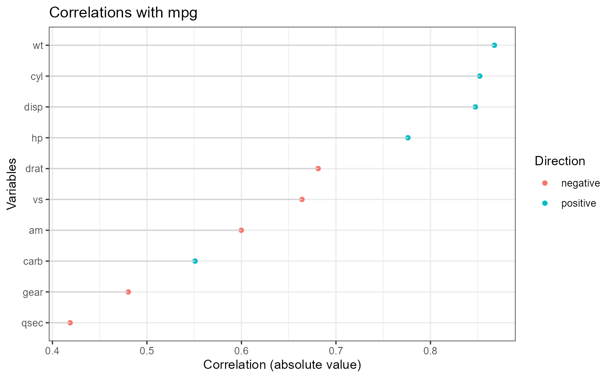

ryx.RmdSo you’re intrested in the rxy package, but don’t know how to. Luckily for you, this article is here to help!
First off, make sure package is installed (I know you have most likely already done this but it never hurts to b thorough).
library(ryx)Great! The package is installed (hopefully).
Next, you should create an ryx object. This is done via the ryx function!
The ryx function needs a dataframe and a dependent variable (y) to test against all the independent variables (x). You can define which specific variables to test y against, however if no value is set for x, the function will just use every non-y variable in your dataframe.
data(mtcars)
#passing a list of x variables
x <- ryx(mtcars, y = "mpg", x = c("hp", "wt", "disp", "cyl", "am", "gear"))
#leaving x blank. x will contain every variable except "mpg"
x <- ryx(mtcars, y = "mpg")Now that you have an ryx object, you can use the remaining functions in the package to analyze the results!
You have three different options depending on what you want. You can display the results as a table
print(x)
#> Correlations of mpg with
#> variable r p sigif
#> wt -0.8676594 1.293959e-10 ***
#> cyl -0.8521620 6.112687e-10 ***
#> disp -0.8475514 9.380327e-10 ***
#> hp -0.7761684 1.787835e-07 ***
#> drat 0.6811719 1.776240e-05 ***
#> vs 0.6640389 3.415937e-05 ***
#> am 0.5998324 2.850207e-04 ***
#> carb -0.5509251 1.084446e-03 **
#> gear 0.4802848 5.400948e-03 **
#> qsec 0.4186840 1.708199e-02 *In text format
summary(x)
#> Correlating mpg with cyl disp hp drat wt qsec vs am gear carb
#> The median absolute correlation was 0.673 with a range from -0.868 to 0.681
#> 10 out of 10 variables were significant at the p < 0.05 level.Or visually
plot(x)
Congrats! You have now discovered the ryx package. If you have any issues, my email is doolsen@wes.edu.
Enjoy! Drew